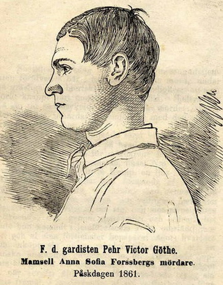

Wikipedia
|
Pehr Victor Göthes mord på Anna Sofia Forssberg ägde rum den 31 mars 1861 på Hornsgatan 7 i Stockholm. Göthe dömdes till döden och avrättades den 8 januari 1862 genom halshuggning nedanför Galgbacken i Hammarbyhöjden. Det skulle bli Stockholms sista offentliga avrättning. Påskdagen den 31 mars 1861 inträffade ett rånmord vilket i efterhand kom att beskrivas som ”förövat under så hemska omständigheter att mänskligheten ryser därvid.” Förövaren var Pehr Victor Göthe (21 år), soldat vid Livgardet. Offret var butiksföreståndaren Anna Sofia Forssberg (ogift, 34 år) och brottsplatsen var en ljus- och tvålbod vid Hornsgatan 7 på Södermalm i Stockholm (huset är numera rivet). Denna dag fick Anna Sofia Forssberg besök av en kvinnlig bekant som hon tillsammans med skulle gå på gudstjänsten i Slottskyrkan på Stockholms slott. Forssberg var dock tvungen att byta om först och hennes bekant gick i förväg. Efter några minuter kom en okänd man in i handelsboden och vidare in i Forssbergs kammare där han utdelade flera knivhugg i hennes huvud. Hon föll ihop och gärningsmannen började tömma både kassalådan och ett skrin. Efter att hon vaknat igen skar mördaren halsen av henne och våldtog henne därefter. Väninnan som återvände mötte mannen på flykt. Han greps senare på Götgatan och hade den blodiga kniven samt 332 riksdaler och 99 öre på sig. Att han valt ut just Anna Sofia Forssberg och hennes bod var ingen slump. Göthe hade redan några dagar innan mordet observerat att Forssberg räknade en, som han trodde, större summa pengar och stoppade ner den i ett skrin. Hans plan var att stjäla pengarna, köpa civila kläder och rymma från regementet där han vantrivdes. Mordet väckte stor uppmärksamhet i Stockholm och gav upphov till skillingtryck om den hemska händelsen och en Sista och uppriktiga Sjelvbekännelse av mördaren. Pehr Victor Göthe dömdes till döden och avrättades offentligt den 8 januari 1862 nedanför Galgbacken i Hammarbyhöjden. Avrättningen utfördes av Stockholms officiella skarprättare, Johan Fredrik Hjort, och beskådades av drygt 4 000 personer. Det skulle bli Stockholms sista offentliga avrättning. |
 |